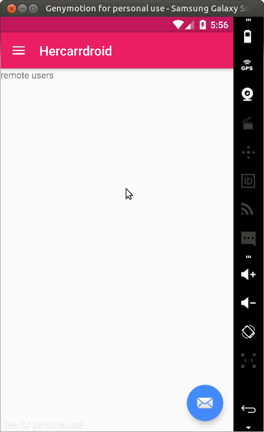

Patrones de diseño
El patrón de diseño MVP o Model View Presenter separa la capa de presentación de la lógica de la aplicación, por ende, su objetivo es que todo lo relacionado con cómo funciona la interfaz de usuario este separado del cómo representarlo en pantalla.
En Android, comúnmente tenemos el problema que tanto las actividades como los fragmentos están altamente acoplados con los componentes de la interfaz gráfica y también con los mecanismos de acceso a datos (ws, bd, files, etc.). Cuando nuestra aplicación es pequeña no tenemos ningún problema, pero cuando la aplicación implementa diversas funcionalidades, lo que refleja una gran cantidad de clases, el mantenimiento y escalabilidad se complica.
¿Que pasaría si mañana en lugar de obtener la información de un ws, se requiere obtener de una base de datos local?
MVP permite que la vista sea independiente del origen de datos. Dividiendo la aplicación en al menos tres capas totalmente distintas.
¿Cómo implementar MVP en Android?
En Internet existe una infinidad de ejemplos en relación con este tema, algunos de ellos son tan complejos porque involucran el uso de demasiadas clases e interfaces para llevar a cabo esto. En este curso utilizaremos una implementación de este patrón de diseño en una forma facil / simple pero efectiva al utilizarlo en conjunto con otro patrón de diseño (comúnmente utilizado en aplicaciones iOS) Delegate Pattern. En nuestro proyecto, adicionalmente de las clases relacionadas a la interfaz de usuario, incorporaremos las siguientes capas:
Model - Contiene cada una de las clases que representan a una entidad dentro de nuestra aplicación.
View - Esta capa esta compuesta por interfaces, donde cada una definirá los métodos o acciones que se requieren notificar al usuario.
Presentador - Clases que se encargan de actuar como intermediario entre la vista y el modelo. Esta capa puede o no conocer directamente el origen de los datos (dependiendo si nuestra aplicación cuenta con alguna capa de servicios), pero no debe conocer los componentes gráficos desde donde se le esta invocando.
Manos a la obra!!! Vamos a incorporar a nuestra aplicación un proceso de autenticación de usuario para permitir ingresar a la misma sólo a usuarios registrados. Para ello ejecutemos los siguientes pasos:
1 - Incorporemos la clase
User.java para representar nuestro modelo Usuario
2 - Definamos la interfaz
ILoginView.java declarando los métodos que indiquen un resultado a notificar al usuario
3 - Declaremos la clase
LoginPresenter.java solicitando en el constructor a la vista encarga de notificar resultados al usuario, así como implementando el método para la validación del usuario
4 - Agregamos una nueva empty actitivy denominada
LoginActivity.java & configuramos lo siguiente:
- * Modificamos el layout activity_login.xml para diseñar la interfaz de login
- * En LoginActivity.java declaramos las referencias para la clase LoginPresenter & los widgets correspondientes
- * Implementamos la interfaz View.OnClickListener
- * Definimos el handler del evento onclik del botón btnLogin, para invocar al método validateUser del presentador
- * Implementamos la interfaz ILoginView, para mostrar un mensaje al usuario correspondiente a cada acción
- * En la clase MainActivity.java, temporalmente definimos un intent para mostrar la interfaz de login
Al finalizar los pasos anteriores, tendremos como resultado:
activity_login.xml
LoginActivity.java
MainActivity.java
- It's time to run the project & test it-
En aplicaciones Android contamos con varios mecanismos para persistir información, los más usados son:
- * Shared Preferences
- * Files
- * API REST / Web Services
- * SQlite Database
A continuación, utilizaremos
Shared Preferences para simular en nuestra aplicación un proceso de registro de usuario. Shared Preferences almacena la información en un esquema llave - valor, similar a un HashMap en Java. Se recomienda utilizarlo cuando la información a persistir es pequeña y plana, es decir, no representa múltiples relaciones entre ella. Para implementar esto, realicemos los siguientes pasos:
1 - Modifquemos la clase
User.java para agregar las siguientes propiedades
2 - Definamos la interfaz
IRegisterView.java declarando los métodos que representen un resultado a notificar al usuario
3 - Declaremos la clase
Constantes.java para declarar las llaves de los valores a persistir
4 - Para implementar el uso de shared preferences e incorpar en nuestra aplicación una mejor legibilidad de código & escalabilidad, declaremos la clase
SharedPreferencesUtils.java para que sea esta clase quien controle todas las operaciones requeridas para persistir la información.
5 - Declaremos la clase
RegisterPresenter.java solicitando en el constructor a la vista encarga de notificar el resultado de registro, así como implementando el método para registrar el usuario persistiendo la información mediante el uso de shared preferences
6 - Agregamos una nueva empty actitivy denominada
RegisterActivity.java & configuramos lo siguiente:
- * Modificamos el layout activity_register.xml para diseñar la interfaz de registro de usuario
- * En RegisterActivity.java declaramos las referencias para la clase RegisterPresenter & los widgets correspondientes
- * Implementamos la interfaz View.OnClickListener
- * Definimos el handler del evento onclik del botón btnSingUp, para invocar al método registerUser del presentador
- * Implementamos la interfaz IRegisterView, para mostrar un mensaje al usuario correspondiente a cada acción
Al finalizar los pasos anteriores, tendremos como resultado:
activity_register.xml
RegisterActivity.java
7 - En el layout
activity_login.xml agregamos un nuevo botón para permitir al usuario realizar el proceso de registro
8 - En la clase
LoginActivity.java definimos el handler para el botón btnSingUp, el cual mostrará la nueva interfaz.
- It's time to run the project & test it-
Nota: Para que la actividad de registro se agregue al stack de navegación se requiere configurar el archivo AndroidManifest.xml agregando la propiedad android:parentActivityName a RegisterActivity
9 - Actualicemos el método validateUser de la clase
LoginActivity.java para verificar sí existe un usuario persistido en la aplicación.
10 - Actualicemos la invocación del método validar usuario dentro de la clase
LoginActivity.java para proporcionar el contexto
- It's time to run the project & test it-
- It's time to practice at home -
Con el objetivo de practicar ambos temas, implemente en la aplicación lo siguiente:
- * Sí no existe un usuario persistido, la clase MainActivity envié al usuario a la interfaz de login.
- * Al seleccionar la opción log out, eliminar los datos del usuario persistido
Un
Fragment representa una porción de interfaz de usuario. El clilo de vida de un fragment es similar al ciclo de vida de un Activity. Un fragmento no puede existir sin una actividad y una actividad puede contener uno o más fragmentos, en otras palabras, un fragmento representa una función modular o concreta de una actividad.
Para poner en practica esta importante caracteristica de Android, vamos reemplazar el funcionamiento que definimos en la sesión #1 al momento de seleccionar una opción del Navigation Drawer, ahora en lugar de actualizar el texto del contenido principal con el titulo de la opción seleccionada, mostremos un fragmento para cada opción seleccionada. Por el momento, solo definiremos dos fragmentos, el resto lo haremos en las secciones anteriores. Estos serán los que ocuparemos para mostrar una lista de amigos en nuestra aplicación.
1 - En Android Studio selecionemos las opciones
File → New → Fragment → Fragment (Blank) para crear los siguientes fragmentos
- * LocalFriendListFragment.java / fragment_local_friend_list.xml
- * RemoteFriendListFragment.java / fragment_remote_friend_list.xml
Nota: No seleccionar las opciones Include fragment factory methods e Include interface callbacks, ya que para efectos de practica los configuraremos manualmente.
Una vez creado los archivos anteriores:
- En los archivos Java configuremos un método factory que nos retorne una instancia del fragmento correspondiente
- En los recursos xml agreguemos un TextView simplemente para indicar textualmente en que fragmentos nos encontramos
Una vez realizado lo anterior, tendremos los siguientes archivos:
LocalFriendListFragment.java
fragment_local_friend_list.xml
RemoteFriendListFragment.java
fragment_remote_friend_list.xml
2 - Actualicemos el layout
app_bar_main.xml reemplazando el include del archivo content_main.xml por un elemento
FrameLayout
3 - En la clase
MainActivity.java:
- Eliminemos el método showTitle
- Implementemos el médoto loadFragment
- Actualicemos el método onNavigationItemSelected para cargar el fragmento correspondiente
- Creemos el método closeDrawer para reutilizarlo dentro de los métodos anteriores
Los pasos anteriores permitiran que la clase
MainActivity.java tenga la siguiente implementación
- It's time to run the project & test it -

RecyclerView es un componente más avanzado y flexible que su predecesor
ListView. Este elemento se ocupa para mostrar un conjunto de datos asegurando un mejor rendimiento de la aplicación al mantener los elementos visibles en forma limitada.
CardView es un componente de UI que permite mostrar información en forma agrupada, el cual nos permite incorporar comportamiento especificado en Material Design transparentemente.
ViewHolder es un patrón de diseño requerido para el uso de RecyclerView. Este patrón es precisamente lo que permite mejorar el rendimiento de la aplicación al mostrar una gran cantidad de elementos dentro de un RecyclerView.
Nota: Con el objetivo de ver las diferencias entre un card view & un layout normal en esta sesión no haremos uso de card view, lo veremos en la sesión # 3.
Implementar un recycler view requiere la ejecución de varios pasos, para poner en práctica esto, vamos a incorporar a nuestra aplicación una lista de amigos realizando lo siguiente:
1 - Agreguemos nuestro modelo
Friend.java
2 - Incorporemos la dependencia de recycler view dentro del archivo
build.gradle
3 - Definamos un elemento recycler view & textview dentro del layout
fragment_local_friend_list.xml
4 - Generemos un nuevo layout denominado
item_view_friend.xml que represente la información a mostrar de nuestro amigo
5 - Generemos una nueva clase denominada
FriendsAdapter.java, aquí explicaremos a detalle cada uno de los elementos que la componen.
6 - Definamos la interfaz
IFriendsView.java para declarar los métodos en los que se requiere mostrar un resultado al usuario.
7 - Definamos la clase
FriendsPresenter.java para incorporar la logica de negocio que permita obtener la lista de amigos.
8 - Actualicemos la clase
LocalFriendListFragment.java para:
- * Instanciar al presentador
- * Obtener la referencia del recycler view & textview
- * Invocar el método del presentador que encuentra los amigos
- * Implementemos la interfaz IFriendsView
- * Enlacemos nuestro recycler view → adapter → view holder → item view
Una vez realizado lo anterior, nuestra clase tendra la siguiente apariencia
- It's time to run the project & test it-
Nuestra lista de amigos se muestra en pantalla, pero cada elemento del listado se ve un poco simple. Vamos configurar nuestro item view para mostrar más elementos.
1 - Asignemos más propiedades a cada uno de de nuestros amigos actualizando el método
findLocalFriends() de la clase
FriendsPresenter.java tal como se muestra a continuación:
Nota: La propiedad picture representa URL donde se encuentra la foto de perfil, se puede utilizar cualquier recurso disponible en Internet tales como: uifaces.com o radfaces.com
2 - Modifiquemos el archivo
item_view_friend.xml para incorporar más elementos que nos permitan mostrar el resto de las propiedades.
4 - Definamos los estilos utilizados en el item view actualizando el archivo
styles.xml
5 - Para mostrar la imagen de perfil, utilizaremos
glide la cual es una libreria que gestiona perfectamente.... modificando el archivo
build.gradle para agregar la siguiente dependencia a nuestro proyecto
Una vez actualizado el archivo, sincronicemos gradle.
6 - Actualicemos el archivo
FriendsAdapter.java para configurar la clase
FriendViewHolder con el objetivo de mostrar el resto de las propiedades. En este paso haremos uso de la libreria glide, dando como resultado lo siguiente:
- It's time to run the project & test it-
¿Porque no se ven las imagenes de perfil?
Este es un buen momento para hablar sobre
uses permission. Una aplicación Android requiere especificar los permisos de determinas caracteristicas del dispositivo a utilizar, con el objetivo de obtener los permisos por parte del usuario. Estos permisos se definen en el archivo
AndroidManifest.xml. Y la autorización de estos permisos se obtienen por parte del usuario al momento de instalar la aplicación o en tiempo de ejecución, dependiendo a la versión de Android instalada. La lista total de permisos disponibles puede ser consultada en el siguiente link:
manifest permission list
Entonces, para poder visualizar la imagen de perfil, modifiquemos el archivo
AndroidManifest.xml anexando el siguiente permiso:
- It's time to run the project & test it-
# - Finalmente, mostremos una linea divisora entre cada elemento del listado. Para ello agreguemos la siguiente clase...
Y eliminemos el widget FloatingActionButton del layout
app_bar_main.xml así como la referencia en la clase
MainActivity.java
- It's time to run the project & test it-
Patrones de diseño
MVP - Model View Presenter
En Android, comúnmente tenemos el problema que tanto las actividades como los fragmentos están altamente acoplados con los componentes de la interfaz gráfica y también con los mecanismos de acceso a datos (ws, bd, files, etc.). Cuando nuestra aplicación es pequeña no tenemos ningún problema, pero cuando la aplicación implementa diversas funcionalidades, lo que refleja una gran cantidad de clases, el mantenimiento y escalabilidad se complica.
¿Que pasaría si mañana en lugar de obtener la información de un ws, se requiere obtener de una base de datos local?
MVP permite que la vista sea independiente del origen de datos. Dividiendo la aplicación en al menos tres capas totalmente distintas.
¿Cómo implementar MVP en Android?
En Internet existe una infinidad de ejemplos en relación con este tema, algunos de ellos son tan complejos porque involucran el uso de demasiadas clases e interfaces para llevar a cabo esto. En este curso utilizaremos una implementación de este patrón de diseño en una forma facil / simple pero efectiva al utilizarlo en conjunto con otro patrón de diseño (comúnmente utilizado en aplicaciones iOS) Delegate Pattern. En nuestro proyecto, adicionalmente de las clases relacionadas a la interfaz de usuario, incorporaremos las siguientes capas:
Model - Contiene cada una de las clases que representan a una entidad dentro de nuestra aplicación.
View - Esta capa esta compuesta por interfaces, donde cada una definirá los métodos o acciones que se requieren notificar al usuario.
Presentador - Clases que se encargan de actuar como intermediario entre la vista y el modelo. Esta capa puede o no conocer directamente el origen de los datos (dependiendo si nuestra aplicación cuenta con alguna capa de servicios), pero no debe conocer los componentes gráficos desde donde se le esta invocando.
Implementación de MVP - Autenticación de usuario
1 - Incorporemos la clase User.java para representar nuestro modelo Usuario
2 - Definamos la interfaz ILoginView.java declarando los métodos que indiquen un resultado a notificar al usuario
3 - Declaremos la clase LoginPresenter.java solicitando en el constructor a la vista encarga de notificar resultados al usuario, así como implementando el método para la validación del usuario
4 - Agregamos una nueva empty actitivy denominada LoginActivity.java & configuramos lo siguiente:
- * Modificamos el layout activity_login.xml para diseñar la interfaz de login
- * En LoginActivity.java declaramos las referencias para la clase LoginPresenter & los widgets correspondientes
- * Implementamos la interfaz View.OnClickListener
- * Definimos el handler del evento onclik del botón btnLogin, para invocar al método validateUser del presentador
- * Implementamos la interfaz ILoginView, para mostrar un mensaje al usuario correspondiente a cada acción
- * En la clase MainActivity.java, temporalmente definimos un intent para mostrar la interfaz de login
Al finalizar los pasos anteriores, tendremos como resultado:activity_login.xml LoginActivity.java MainActivity.java
- It's time to run the project & test it-
Shared Preferences
- * Shared Preferences
- * Files
- * API REST / Web Services
- * SQlite Database
A continuación, utilizaremos Shared Preferences para simular en nuestra aplicación un proceso de registro de usuario. Shared Preferences almacena la información en un esquema llave - valor, similar a un HashMap en Java. Se recomienda utilizarlo cuando la información a persistir es pequeña y plana, es decir, no representa múltiples relaciones entre ella. Para implementar esto, realicemos los siguientes pasos:1 - Modifquemos la clase User.java para agregar las siguientes propiedades
2 - Definamos la interfaz IRegisterView.java declarando los métodos que representen un resultado a notificar al usuario
3 - Declaremos la clase Constantes.java para declarar las llaves de los valores a persistir 4 - Para implementar el uso de shared preferences e incorpar en nuestra aplicación una mejor legibilidad de código & escalabilidad, declaremos la clase SharedPreferencesUtils.java para que sea esta clase quien controle todas las operaciones requeridas para persistir la información. 5 - Declaremos la clase RegisterPresenter.java solicitando en el constructor a la vista encarga de notificar el resultado de registro, así como implementando el método para registrar el usuario persistiendo la información mediante el uso de shared preferences
6 - Agregamos una nueva empty actitivy denominada RegisterActivity.java & configuramos lo siguiente:
- * Modificamos el layout activity_register.xml para diseñar la interfaz de registro de usuario
- * En RegisterActivity.java declaramos las referencias para la clase RegisterPresenter & los widgets correspondientes
- * Implementamos la interfaz View.OnClickListener
- * Definimos el handler del evento onclik del botón btnSingUp, para invocar al método registerUser del presentador
- * Implementamos la interfaz IRegisterView, para mostrar un mensaje al usuario correspondiente a cada acción
Al finalizar los pasos anteriores, tendremos como resultado:activity_register.xml RegisterActivity.java
7 - En el layout activity_login.xml agregamos un nuevo botón para permitir al usuario realizar el proceso de registro
8 - En la clase LoginActivity.java definimos el handler para el botón btnSingUp, el cual mostrará la nueva interfaz.
- It's time to run the project & test it-
9 - Actualicemos el método validateUser de la clase LoginActivity.java para verificar sí existe un usuario persistido en la aplicación. 10 - Actualicemos la invocación del método validar usuario dentro de la clase LoginActivity.java para proporcionar el contexto
- It's time to run the project & test it-
- It's time to practice at home -
Con el objetivo de practicar ambos temas, implemente en la aplicación lo siguiente:
Fragments & Fragment Manager
Para poner en practica esta importante caracteristica de Android, vamos reemplazar el funcionamiento que definimos en la sesión #1 al momento de seleccionar una opción del Navigation Drawer, ahora en lugar de actualizar el texto del contenido principal con el titulo de la opción seleccionada, mostremos un fragmento para cada opción seleccionada. Por el momento, solo definiremos dos fragmentos, el resto lo haremos en las secciones anteriores. Estos serán los que ocuparemos para mostrar una lista de amigos en nuestra aplicación.
1 - En Android Studio selecionemos las opciones File → New → Fragment → Fragment (Blank) para crear los siguientes fragmentos
- * LocalFriendListFragment.java / fragment_local_friend_list.xml
- * RemoteFriendListFragment.java / fragment_remote_friend_list.xml
Nota: No seleccionar las opcionesInclude fragment factory methodseInclude interface callbacks, ya que para efectos de practica los configuraremos manualmente.Una vez creado los archivos anteriores:
- En los archivos Java configuremos un método factory que nos retorne una instancia del fragmento correspondiente
- En los recursos xml agreguemos un TextView simplemente para indicar textualmente en que fragmentos nos encontramos
Una vez realizado lo anterior, tendremos los siguientes archivos:LocalFriendListFragment.java fragment_local_friend_list.xml RemoteFriendListFragment.java fragment_remote_friend_list.xml 2 - Actualicemos el layout app_bar_main.xml reemplazando el include del archivo content_main.xml por un elemento FrameLayout 3 - En la clase MainActivity.java:
- Eliminemos el método showTitle
- Implementemos el médoto loadFragment
- Actualicemos el método onNavigationItemSelected para cargar el fragmento correspondiente
- Creemos el método closeDrawer para reutilizarlo dentro de los métodos anteriores
Los pasos anteriores permitiran que la clase MainActivity.java tenga la siguiente implementación- It's time to run the project & test it -
Código Fuente
Sí lo requieres, descarga la versión del proyecto hasta la primera parte de esta sección.
Descargar
Recycler View | View Holder | Card View
CardView es un componente de UI que permite mostrar información en forma agrupada, el cual nos permite incorporar comportamiento especificado en Material Design transparentemente.
ViewHolder es un patrón de diseño requerido para el uso de RecyclerView. Este patrón es precisamente lo que permite mejorar el rendimiento de la aplicación al mostrar una gran cantidad de elementos dentro de un RecyclerView.
Nota: Con el objetivo de ver las diferencias entre un card view & un layout normal en esta sesión no haremos uso de card view, lo veremos en la sesión # 3.
Implementar un recycler view requiere la ejecución de varios pasos, para poner en práctica esto, vamos a incorporar a nuestra aplicación una lista de amigos realizando lo siguiente:
1 - Agreguemos nuestro modelo Friend.java 2 - Incorporemos la dependencia de recycler view dentro del archivo build.gradle 3 - Definamos un elemento recycler view & textview dentro del layout fragment_local_friend_list.xml 4 - Generemos un nuevo layout denominado item_view_friend.xml que represente la información a mostrar de nuestro amigo 5 - Generemos una nueva clase denominada FriendsAdapter.java, aquí explicaremos a detalle cada uno de los elementos que la componen. 6 - Definamos la interfaz IFriendsView.java para declarar los métodos en los que se requiere mostrar un resultado al usuario. 7 - Definamos la clase FriendsPresenter.java para incorporar la logica de negocio que permita obtener la lista de amigos. 8 - Actualicemos la clase LocalFriendListFragment.java para:
- * Instanciar al presentador
- * Obtener la referencia del recycler view & textview
- * Invocar el método del presentador que encuentra los amigos
- * Implementemos la interfaz IFriendsView
- * Enlacemos nuestro recycler view → adapter → view holder → item view
Una vez realizado lo anterior, nuestra clase tendra la siguiente apariencia- It's time to run the project & test it-
Configurando el item view
1 - Asignemos más propiedades a cada uno de de nuestros amigos actualizando el método findLocalFriends() de la clase FriendsPresenter.java tal como se muestra a continuación: Nota: La propiedad picture representa URL donde se encuentra la foto de perfil, se puede utilizar cualquier recurso disponible en Internet tales como: uifaces.com o radfaces.com
2 - Modifiquemos el archivo item_view_friend.xml para incorporar más elementos que nos permitan mostrar el resto de las propiedades. 4 - Definamos los estilos utilizados en el item view actualizando el archivo styles.xml 5 - Para mostrar la imagen de perfil, utilizaremos glide la cual es una libreria que gestiona perfectamente.... modificando el archivo build.gradle para agregar la siguiente dependencia a nuestro proyecto Una vez actualizado el archivo, sincronicemos gradle.
6 - Actualicemos el archivo FriendsAdapter.java para configurar la clase FriendViewHolder con el objetivo de mostrar el resto de las propiedades. En este paso haremos uso de la libreria glide, dando como resultado lo siguiente: - It's time to run the project & test it-
Este es un buen momento para hablar sobre uses permission. Una aplicación Android requiere especificar los permisos de determinas caracteristicas del dispositivo a utilizar, con el objetivo de obtener los permisos por parte del usuario. Estos permisos se definen en el archivo AndroidManifest.xml. Y la autorización de estos permisos se obtienen por parte del usuario al momento de instalar la aplicación o en tiempo de ejecución, dependiendo a la versión de Android instalada. La lista total de permisos disponibles puede ser consultada en el siguiente link: manifest permission list
Entonces, para poder visualizar la imagen de perfil, modifiquemos el archivo AndroidManifest.xml anexando el siguiente permiso: - It's time to run the project & test it-